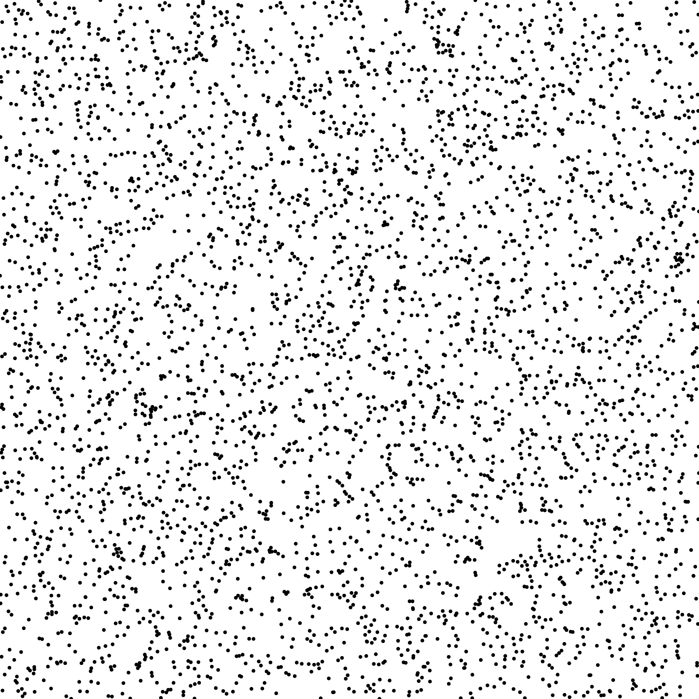
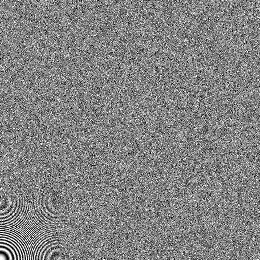
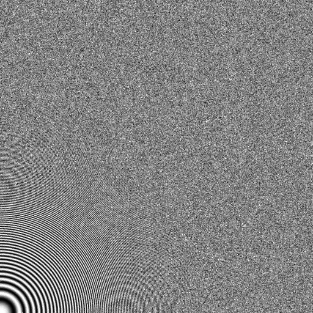
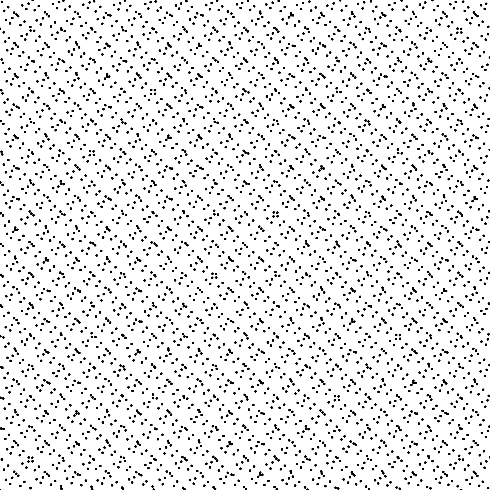
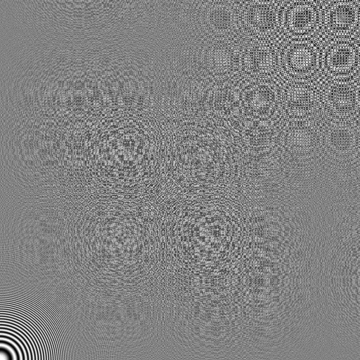

| Files |
src/render/Zoneplate2D.hpp src/render/zoneplate_fromfile_2dd.cpp |
This test uses the point set given as input to reconstruct the followinf function : sin(x^2+y^2). The number of samples per pixel can be given as parameter, and the resolution of the image to reconstruct is determined accordingly. A zoom factor can also be set to increase/decrease the range of frequencies.
Parameters:
[HELP] -i [string] The input pointset -o [string] The output zoneplate -h Displays this help message -z [double] Zoom factor -p [uint=4] Nb samples per pixel
To generate a zoneplate image from a given point set, one can use the following command line:
./src/render/zoneplate_fromfile_2dd -i wnois262k.dat -o zoneplate.png
Or one can use the following C++ code:
uint nbspp=4;
double zoom=1.0;
uint res=512;
utk::Pointset<2, double,utk::Point<2, double> > pts;
utk::PointsetReader<2, double, utk::Point<2, double> > pts_reader;
pts_reader.open("wnois262k.dat");
pts_reader.readPointset(pts);
pts_reader.close();
double scale = sqrt(pts.size())/nbspp;
for(uint i=0; i < pts.size(); i++)
pts[i].pos() *= scale;
Zoneplate zp(res, 1/zoom, nbspp);
zp.make(pts);
zp.writePng("zoneplate.png");
./src/render/zoneplate_fromfile_2dd -i wnois262k.dat -o zoneplate.png
| File wnois262k.dat |
Pointset  |
Zoneplate  |
./src/render/zoneplate_fromfile_2dd -i wnois262k.dat -o zoneplate_z15.png -z 1.5
| File wnois262k.dat |
Pointset |
Zoneplate  |
./src/render/zoneplate_fromfile_2dd -i sobol262k.dat -o zoneplate_p4.png -p 4
| File sobol262k.dat |
Pointset  |
Zoneplate  |
./src/render/zoneplate_fromfile_2dd -i sobol262k.dat -o zoneplate_p1.png -p 1 -z 2
| File sobol262k.dat |
Pointset |
Zoneplate |


{kind=link}
{kind=link}
{kind=link}
{kind=link}
{kind=link}